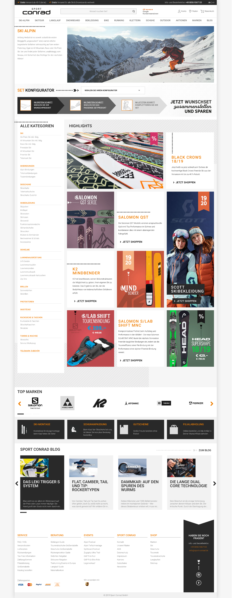

Headless E-Commerce
with
React and Next.js
About Me
Hi, I'm René! :)
Web Developer
marmalade Group

Headless
Characteristics:
- Storefront decoupled from Backend
- State Management remains in the Backend
- Communication exclusively via APIs
Benefits:
- (Re-)Use data in any application
- Gradually replace existing legacy systems
- Change your development workflows
Concept #1
API-First Workflow
In Theory:
- Frontend has no knowledge about URL structures
- API provides information related to a given URL (content, products, etc.)
- Frontend decides what kind of page to render based on the API response
In Practice:
Unknown URLs:

Concept #2
URL-driven Frontend
URL-driven:
- Application state (filtering, sorting, ...) is derived from query parameters
- Request Builder generates API requests based on the Context
- User interactions generate new query parameters
- Navigate to the new URL to generate a new API request and fetch data
- Navigation happens internally, unnoticable for the user
Implementation in Next.js
One Route to rule them all

Generating API Requests

Handling User Interaction

Gradual Migration:
- Traffic gets routed to the Next.js server first
- Feature Flag - Next.js returns a non-200 status code, the load balancer falls back to the legacy system
- Enables Page-by-Page or Type-by-Type migration to the new Frontend application
Native Browser APIs rule!
<Overlay />
 <OtherComponent />
<OtherComponent />

Integrating different Frameworks is haaard
(...still evolving...)
Unofficial Web Standards
?makairaFilter[color][0]=White&makairaFilter[color][1]=Violet
Mind the Version Number!
Blog
www.lost-in-technology.com
We are hiring!